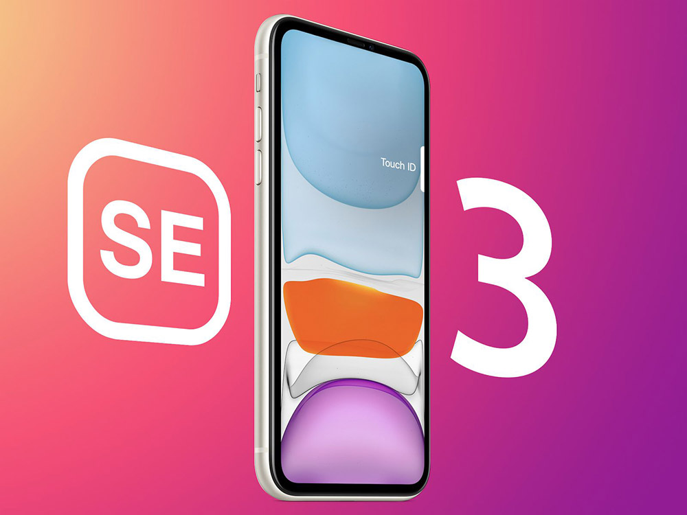

DigiNews
DigiNews
تمامی حقوق این سایت برای دیجی نیوز محفوظ است. نقل مطالب با ذکر منبع بلامانع است.
copy Right© 2022 DigiNews News Agancy, All rights reserved

بررسی آیفون SE 2022؛ تکراریتر از همیشه
دو واژه «آیفون» و «اقتصادی» معمولا با یکدیگر بیگانهاند، اما آیفون SE 2022 جدیدترین نماینده اپل در بازار گوشیهای نهچندان گرانقیمت محسوب میشود. این گوشی چیپ قدرتمند A15 Bionic را در قالب تکراری آیفون ۸ در اختیار شما میگذارد.
اولین آیفون SE در سال ۲۰۱۶ ارائه شد و عنوان یک آیفون ارزان قیمت را از آن خود کرد. این دستگاه فروش بالایی داشت و همین سبب شد تا پس از چند سال، اپل به فکر ارائه نسل دوم آیفون SE در سال 2020 بیفتد که سال گذشته آن را بررسی کردیم. در نهایت، امسال نسل سوم آیفون SE با قیمتی بیشتر از قبل از راه رسید.
مدل ۱۲۸ گیگابایتی این گوشی در جدیدترین رویداد اپل با قیمت ۴۷۹ دلار معرفی شد که در ایران چیزی در حدود ۱۸ میلیون تومان برایتان آب میخورد. بیشک مهمترین ویژگی این دستگاه، بهرهمندی از قویترین چیپ اپل یعنی A15 Bionic است که گوشیهای خانواده آیفون 13 از آن استفاده میکنند. به لطف وجود این تراشه، آیفون SE 2022 قابلیت اتصال به شبکه 5G را نیز دارد. در ادامه مشخصات فنی iPhone SE 2022 را مرور میکنیم.
صحبت در مورد طراحی آیفون SE 2022 معنایی ندارد چون این گوشی از همان طراحی قدیمی و تکراری آیفون ۸ و آیفون SE قبلی استفاده میکند. حتی با در نظر گرفتن بعضی جزئیات، این سبک طراحی به آیفون ۶ برمیگردد که در سال ۲۰۱۴ معرفی شد. بنابراین گفتنیها در مورد طراحی این گوشی گفته شده و جایی برای حرف تازه باقی نمانده است.
نمایشگر
نمایشگر آیفون SE جدید هم تفاوتی با نمایشگر نسل قبلی و آیفون 8 ندارد. این گوشی به یک صفحه ۴.۷ اینچی از نوع Retina IPS LCD مجهز شده که با رزولوشن ۷۵۰ در ۱۳۳۴ پیکسل تجربه بصری قابل قبولی را به شما ارائه میدهد. اگرچه تراکم ۳۲۶ پیکسل در هر اینچ در سال ۲۰۲۲ کم به نظر میرسد اما بهخاطر ابعاد کوچک صفحه، مشکل خاصی بهوجود نمیآید.
کیفیت کلی نمایشگر آیفون SE 2022 مطلوب است. این نمایشگر رنگها را بسیار دقیق نشان میدهد و با فناوری True Tone میتواند دمای رنگ را بر اساس نور محیط تنظیم کند. پشتیبانی از فناوریهای HDR10 و دالبی ویژن نیز برای کاربرانی که به چنین محتوایی دسترسی دارند، قابل اهمیت است.
حداکثر روشنایی صفحه آیفون SE 2022 به حدود ۶۵۰ نیت میرسد که حتی در مقایسه با میانردههای اندرویدی هم حرفی برای گفتن ندارد و هنگام تماشای محتوا زیر تابش مستقیم نور خورشید، شما را به دردسر میاندازد. نرخ رفرش ۶۰ هرتزی نمایشگر این گوشی نقطه ضعف بزرگی نیست، اما اگر تجربه استفاده از پنلهایی با نرخ رفرش بالاتر را داشته باشید احتمالا برایتان آزاردهنده خواهد بود.
مشکل اساسی من هنگام استفاده از آیفون SE 2022 ابعاد بسیار کوچک نمایشگر بود. این نمایشگر نه برای مطالعه ساخته شده، نه برای تماشای ویدیو و نه برای بازی کردن. البته کاربران این گوشی احتمالا استفاده بسیار ساده و عمومی از آن خواهند داشت اما حتی مرور محتوای شبکههای اجتماعی مانند اینستاگرام روی این گوشی نیز با دشواری همراه است.
DigiNews
DigiNews
تمامی حقوق این سایت برای دیجی نیوز محفوظ است. نقل مطالب با ذکر منبع بلامانع است.
copy Right© 2022 DigiNews News Agancy, All rights reserved